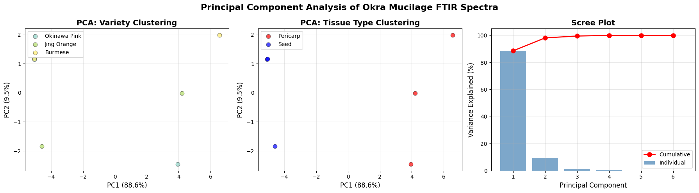

Computational Analysis of FTIR Spectra
Identifying mathematical patterns in complex chemical data via PCA.
The Challenge
Interpreting FTIR data is difficult due to overlapping peaks that obscure individual component quantification. I utilized a computational approach to identify underlying mathematical patterns and sort samples automatically.
1. Principal Component Analysis (PCA)
The PCA algorithm successfully sorted samples into distinct, non-random clusters. The primary variance (PC1) accounts for 88.60% of the data and perfectly separates "Seed" samples from "Pericarp" samples, validating the preprocessing pipeline.

Fig 1: PCA clustering showing perfect separation of botanical tissue types.
2. Predictive Modeling
Beyond sorting, the next phase involves teaching the model to predict physical values, such as Polysaccharide Yield and Antibacterial Inhibition (MIC), bridging the gap between raw spectral data and lab results.